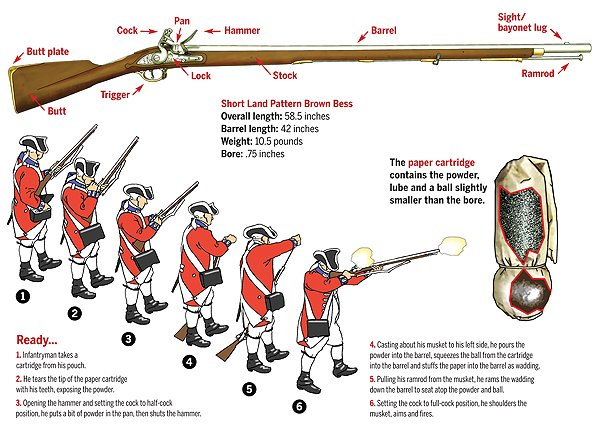
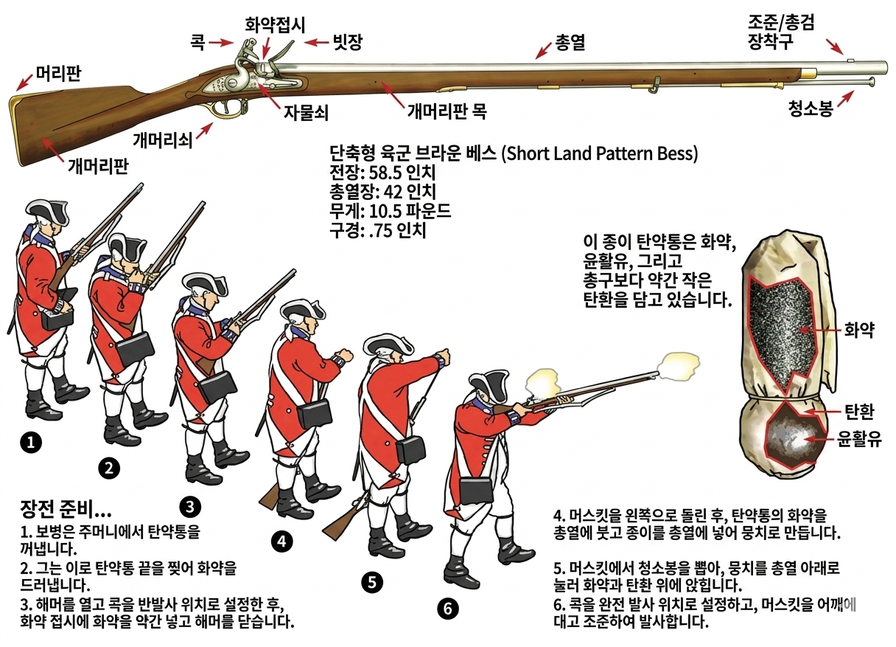
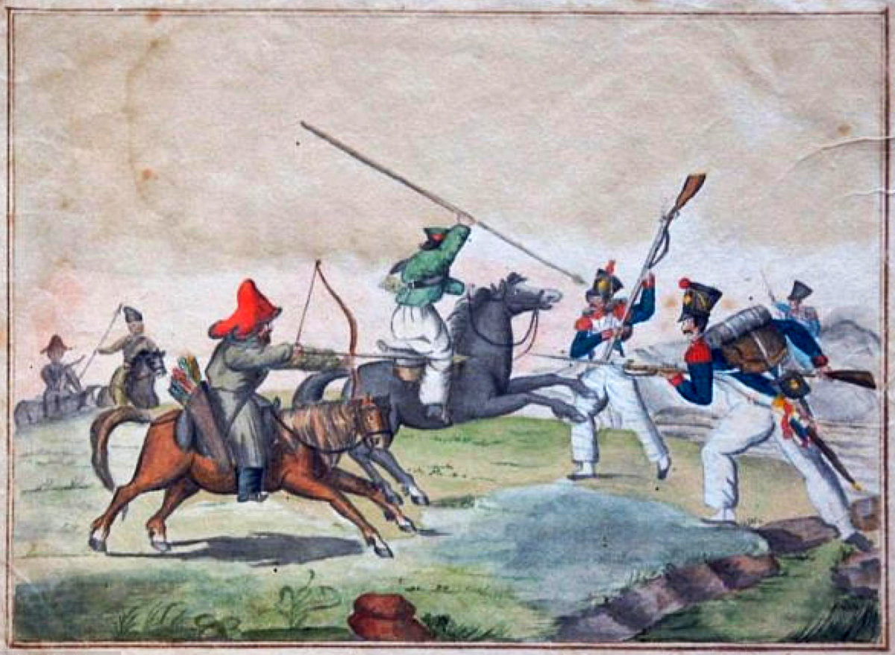
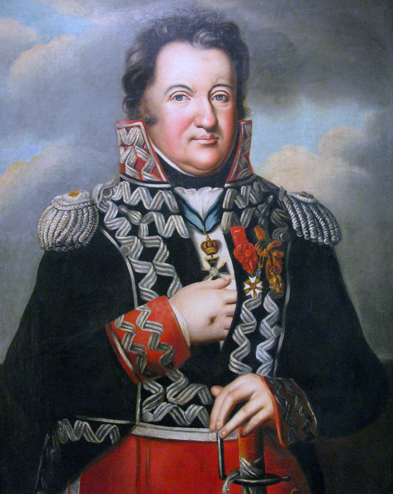
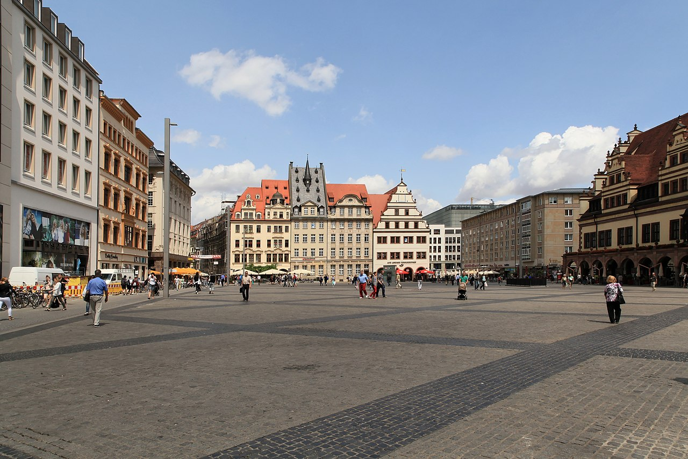
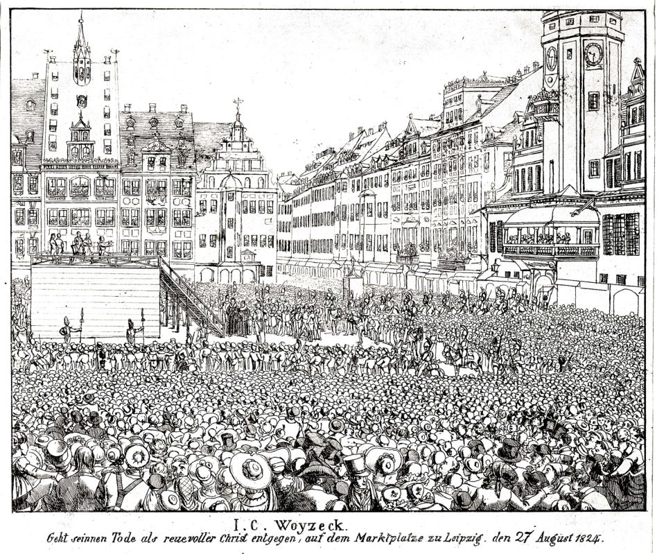
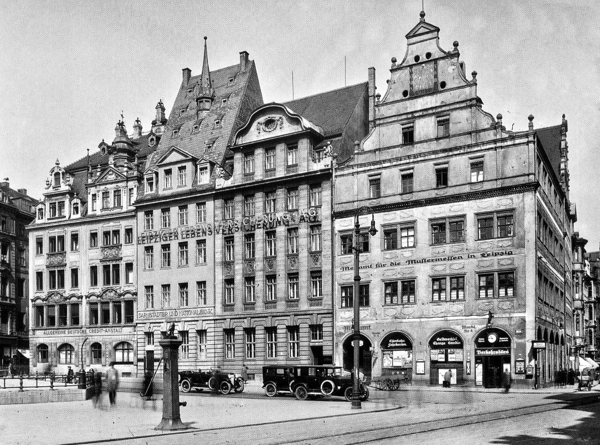
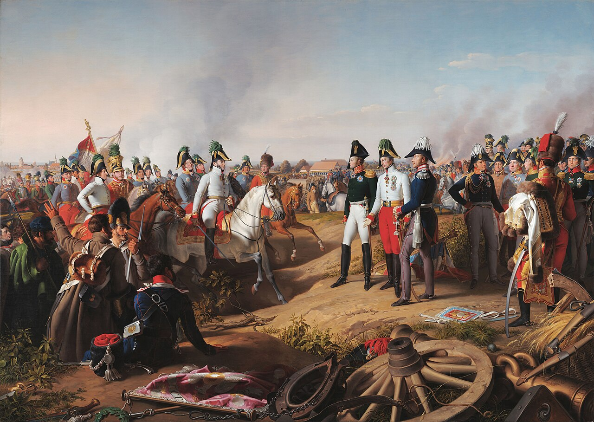

라이프치히 전투 (마지막편) - 3개월만의 재회
게시: 2026-04-27T06:30:04+09:00
나폴레옹과 함께 라이프치히에 집결했던 그랑다르메 병사들은 이미 과거 아우스테를리츠나 예나-아우어슈테트에서 싸웠던 정예병들이 아니었습니다. 그럼에도 불구하고, 대부분의 병사들은 연합군의 추격에 매우 끈질기게 저항했습니다. '내가 대체 왜 프랑스를 위해 싸워야 하는지 모르겠다'고 투덜거리던 약 4만 정도의 독일계 병사들 대부분은 그때 즈음해서는 이미 연합군에 투항한 상태였기 때문에 더욱 그랬을 수도 있습니다. 로흘리츠(Friedrich Rochlitz)라는 이름의 프로이센 장교의 기록에 따르면 프랑스 및 폴란드 병사들의 저항은 매우 완강하여, 일부는 가슴까지 차는 물 속에 들어간 상태에서도 연합군을 향해 총을 쏘았고 심지어 재장전까지 했다고 합니다.

(전장식 머스켓 소총의 장전 방법입니다. 설령 탄약포(cartridge)가 잘 기름 먹인 방수종이로 되어 있어서 화약이 물에 젖지 않았다고 해도, 가슴까지 물이 들이찬 상황에서는 절대로 재장전이 불가능했습니다. 로흘리츠라는 사람이 목격했다는 물 속에서 재장전을 했다는 병사는 결국 불발로 끝났을 것입니다.)

(위의 작은 그림의 해상도가 너무 낮아서 무료 제미나이에게 고해상도로 만들고 번역도 해달라고 하니 아주 마음에 들진 않아도 대충 그럴싸하게 만들어주네요! 참 편리한 세상임다.) 이렇게 격렬하게 저항하며 항복을 거부한 병사들도, 단지 나폴레옹을 위해 적병을 하나라도 더 죽이려는 투지로 가득찬 것은 아니었습니다. 따지고 보면 이들도 독 안에 든 쥐처럼 겁이 나서 싸웠던 것입니다. 적에게 따라 잡힌 병사들은 그렇게 맹목적으로 싸웠지만, 용케 엘스터 강변까지 온 병사들은 어쩌면 살 수 있다는 희망으로 거센 강물에 뛰어들었습니다. 하지만 대부분의 병사들은 결국 익사하고 말았습니다. 너무 많은 병사들과 말들이 익사하는 바람에 그런 시체들이 서로 엉켜 떠내려가다 강변에 얽혀 끔찍한 광경을 연출할 정도였습니다. 믿기 어려운 이야기인데, 일부 구간에서는 그렇게 얽힌 시체들이 너무 많아서 일부 병사들은 그 시체 더미들을 다리 삼아 강을 건너는데 성공하기도 했다고 합니다. 이렇게 아비규환 같던 엘스터 강변에서의 소동과는 별개로, 연합군의 추격은 그렇게까지 급박하게 이루어지지 않았습니다. 특히 엘스터 강변에까지 쫓아와 강물에 뛰어드는 그랑다르메 병사들의 등에 총검을 찌르거나 총을 쏘는 연합군은 그리 많지 않았습니다. 이유는 크게 2가지였습니다.

(중국 역사를 보면 그렇게 강가에 몰린 패잔병들이 끔찍한 학살을 당하는 경우가 많은데, 엘스터 강변에서는 그런 수준의 학살이 벌어지지는 않았습니다. 이유는 강가까지 쫓아온 연합군이 많지 않았기 때문이었습니다. 그림은 라이프치히에서 프랑스군을 공격하는 러시아군의 코삭 기병과 바쉬키르 기병의 모습입니다. 활을 쏘다니 어울리지 않아 보입니다만, 당시 기병들은 마상에서의 재장전이 너무 어려워 사실상 화약 무기 사용을 거의 포기하고 창과 군도 등의 냉병기를 주로 사용했으므로 숙련만 잘 되어 있다면 저런 활도 의외로 꽤 먹히는 무기였습니다.) 첫째, 운 좋게도 먼저 강을 건넜던 마르몽이 강변에 유격병들과 포병들을 배치하여 강변에 나타나는 연합군에 대해 사격을 가했습니다. 이미 언급한 대로 포니아토프스키는 강을 건너다 어디선가 날아온 총탄에 목숨을 잃었는데, 흔히 그 총탄은 러시아제나 프로이센제가 아니라 프랑스제였을 거라는 이야기가 많은데, 바로 그런 이유 때문이었습니다. 당시 머스켓 소총의 최대 사거리는 기껏해야 250m 정도였는데, 그 총탄이 포니아토프스키의 몸통을 관통했다는 점을 생각해보면 꽤 가까운 거리에서 발사된 것이 분명했고, 또 당시에 연합군이 그렇게까지 강변에 가깝게 접근하지는 못했습니다. 둘째, 그랑다르메 병사들이 라이프치히 시내를 관통하여 란슈테트 성문을 통해 엘스터 강변까지 나오는 데 있어 좁은 골목과 부서진 마차 등으로 인해 애를 먹었던 것과 동일하게, 연합군도 똑같은 이유로 교통 정체에 시달렸습니다. 어찌나 체증이 심했는지, 일부 부대는 추격을 포기하고 라이프치히 시내의 광장에 집결할 정도였습니다. 라이프치히는 상업이 크게 발달했던 곳이라서, 시내 곳곳에 '육류 시장' '목재 시장' 등의 특정 상품을 거래하는 넓은 시장이 존재했습니다. 바로 그런 곳이 연합군 부대들의 자연스러운 집결 장소 역할을 했습니다. 그렇다고 해도, 엘스터 다리가 끊긴 이상 아직 강을 건너지 못한 그랑다르메 병사들이 탈출한 길은 정말 없었습니다. 거센 강물에 뛰어들 엄두를 내지 못했거나 혹은 강까지 갈 기회조차 얻지 못했던 병사들은 결국 항복해야 했습니다. 최후까지 부대 단위로 저항했던 것은 역시나 돔브로프스키(Jan Henryk Dąbrowski) 지휘 하의 폴란드 병사들이었습니다. 하지만 이들도 결국 오후 1시경 항복했습니다.

(이미 여러번 소개해드린 폴란드의 영웅 돔브로프스키입니다. 그의 이름은 지금도 폴란드 애국가 가사에 나옵니다. 그도 분명히 엘스터교의 폭파로 퇴로가 끊기고 고립된 사람들 중 하나였고 그의 부대는 결국 항복했지만, 희한하게도 그는 빠져나와 나폴레옹과 합류했습니다. 말을 타고 있어서 엘스터강을 건널 수 있었던 것일까요? 거기에 대해서는 명확한 이야기는 찾지 못했습니다. 그는 전사한 포니아토프스키의 뒤를 이어, 라이프치히 전투 며칠 후인 10월 28일에 나폴레옹 휘하의 모든 폴란드군의 지휘관이 됩니다. 그는 종전 이후 폴란드인들을 달래기 위해 빈 회의에서 만들어진 자치령인 '폴란드 왕국'에서 군의 편성을 맡았으나, 그 이름뿐인 폴란드 왕국의 실체에 실망하여 곧 은퇴했고 1818년 62세의 나이로 병사합니다.)
이때 즈음하여 짜르 알렉산드르와 프로이센 국왕 프리드리히 빌헬름 3세, 그리고 슈바르첸베르크도 라이프치히 동쪽 외곽의 병원 성문(Hospitaltor)을 통해 입성했습니다. 이들은 그리마 성문(Grimmaisches Tor)을 통해 내성으로 들어와 중앙시장(Markt)에 도착했는데, 거기엔 베니히센과 베르나도트가 이미 와 있었습니다. 알렉산드르 등 보헤미아 방면군의 수뇌부가 베르나도트와 재회한 것은 휴전 기간 중 트라헨베르크(Trachenberg)에서 만나 나폴레옹을 잡기 위한 작전안을 협의한지 3개월만이었습니다. 어떻게 생각해보면 그때 베르나도트의 주도로 작성된 작전안인 트라헨베르크 의정서 덕분에 그들이 거기서 승리자로서 재회한 셈이니, 아마 그들은 꽤 감개무량했을 것입니다.

(라이프치히의 중앙시장은 지금도 옛 시청 건물 등 역사적인 저택들이 둘러싸고 있는 라이프치히의 중심 광장 역할을 하고 있으며, 독일에서 가장 전통 있는 라이프치히 크리스마스 마켓이 매년 이곳에서 열리는 등 각종 정기 시장과 축제 장소로 활용되고 있습니다. 또한 각종 정치 집회 장소로도 사용됩니다. 서울로 따지면 광화문 광장 같은 거라고 보면 될 듯합니다.)

(라이프치히 중앙시장은 각종 공식 행사로도 활용되었는데, 그 중 중요한 행사가 바로 범죄자 처형이었습니다. 이 그림은 그런 공개 처형 중 마지막으로 집행되었던 1824년의 보이첵(Johann Christian Woyzeck)이라는 살인범의 효수 장면을 묘사한 것입니다. 보이첵은 자신의 정부를 칼로 찔러 죽인 살인범이었습니다. 정면에 보이는 건물은 위의 현재 사진 속 건물과 똑같네요. 저 건물의 정체는 뭘까요?)

(주황색 지붕을 가진 저 건물의 정체는 Alte Waage(알터 바거, 영어로는 Old Weigh House)로서, 굳이 번역하자면 '옛 계량소' 정도라고 할 수 있습니다. 이 건물은 상업 중심지였던 라이프치히에서 모든 상품의 무게를 재고 그에 따라 관세를 걷던 공공건물로서, 일종의 행정 복합건물이었습니다. 이 건물도 WW2 때 완전히 파괴되었다가 나중에 복원된 것입니다. 지금은 알터 라이프치히(Alte Leipziger)라는 보험사 소유로서, 보험사 사무실 및 식당 등 상업 시설로 사용되고 있습니다. 이 사진은 1925년의 모습입니다.) 다들 감개무량에 젖어 있던 이 곳에서 모두가 행복한 것은 아니었습니다. 블뤼허와 그나이제나우도 곧 나타났는데, 그들은 라이프치히로의 진격에는 그토록 늑장을 부리던 뺸질이 베르나도트가 이런 자리에는 가장 먼저 와서 짜르 및 빌헬름 3세와 낯 뜨거운 사탕발림 찬사를 주거니 받거니 하는 모습에 기분이 썩 좋지는 않았습니다. 하지만 이들이 아무리 불쾌했더라도, 작센 국왕 아우구스투스만큼 불행하지는 않았을 것입니다. 바로 근처에서 초조하게 짜르 알렉산드르의 초대를 기다리던 아우구스투스는 그들이 자신을 본 척 만 척하고 지나쳐 나폴레옹이 도망친 서쪽 출구인 란슈테트 성문으로 향하는 것을 보고 절망에 빠져들었습니다. 실제로 아우구스투스는 동료 군주가 아니라 그냥 포로로 취급되었고, 곧 베를린으로 압송되었습니다. 특히 상트 페체르부르크나 오스트리아가 아니라 베를린으로 압송된 것이 의미심장했는데, 아우구스투스는 아직 몰랐겠지만 이미 알렉산드르와 빌헬름 3세 사이에는 프로이센이 작센의 영토를 갖는 것으로 비밀 약속이 되어 있었던 것입니다. 이렇게 군주들과 장군들이 위풍당당 화기애애하게 란슈테트 성문을 향해 벌이던 승리의 행진은 오래 가지 못했습니다. 이미 언급한 대로, 좁은 길에 행진하는 부대들과 부서진 마차, 시체와 부상병 등이 너무 많아 우아한 전진이 어려운 것에 더해, 엘스터강 좌안에 마르몽이 배치한 프랑스 포병들이 쏘아댄 폭발탄이 알렉산드르 바로 근처까지 날아와 폭발했기 때문이었습니다. 다행히 알렉산드르는 다치지 않았습니다. 이들은 방향을 돌려 다시 그리마 성문으로 갔는데, 거기서 마침 라이프치히에 도착한 오스트리아 황제 프란츠 1세를 만났습니다. 완전체가 된 이들은 덕담을 주고 받으며 기뻐했고, 베르나도트의 주장에 따라 라이프치히 북쪽 외곽인 로이드니츠(Reudnitz)로 가서 베르나도트가 애지중지하던 스웨덴 군단을 사열했습니다. 블뤼허와 그나이제나우는 그 꼴을 보고 더욱 복장이 터졌습니다.

(이 그림은 Johann Peter Krafft가 그린 '라이프치히 전투 후 승리 선언'이라는 작품입니다. 1839년에 그려진 작품으로서, 실제 모습과는 당연히 꽤 다릅니다. 중앙 좌측에 백마를 타고 있는 흰색 군복의 장군은 슈바르첸베르크이고, 오른쪽에 서 있는 사람들은 왼쪽부터 알렉산드르, 프란츠, 프리드리히 빌헬름입니다. 오스트리아 황제 프란츠를 센터에 배치해놓은 것을 보면 화가 크라프트가 오스트리아 화가라는 것을 짐작하실 수 있을 것입니다. 저 3명의 군주들 오른쪽에서 재미있는 표정으로 오른쪽을 보고 있는 사람은 프로이센의 참모인 크네제벡(Karl Friedrich von dem Knesebeck)입니다.) 블뤼허의 기분이 어떻든 상관하지 않고, 10월 19일 해가 지면서 강 건너에서 쏘아대던 프랑스군의 포격도 마침내 중단되었습니다. 그것이 라이프치히 전투의 마무리였습니다. 다음 편에서는 라이프치히 전투의 에필로그가 이어집니다. Source : The Life of Napoleon Bonaparte, by William Milligan Sloane Napoleon and the Struggle for Germany, by Leggiere, Michael V With Napoleon's Guns by Colonel Jean-Nicolas-Auguste Noël https://www.historyofwar.org/articles/battles_leipzig_19_october.html https://warhistory.org/@msw/article/leipzig-battle-of-the-nations https://www.encyclopedia.com/history/encyclopedias-almanacs-transcripts-and-maps/leipzig-battle-0 https://warfarehistorynetwork.com/article/death-knell-for-napoleons-empire/ https://www.napoleon-series.org/military-info/battles/leipzig/c_leipzigoob10.html http://napoleonistyka.atspace.com/Leipzig_battle_of_the_Nations.htm https://forums.sassnet.com/index.php?/topic/348410-how-to-load-a-musket/ https://en.wikipedia.org/wiki/Markt_(Leipzig) https://en.wikipedia.org/wiki/Alte_Waage_(Leipzig) https://en.wikipedia.org/wiki/Jan_Henryk_D%C4%85browski